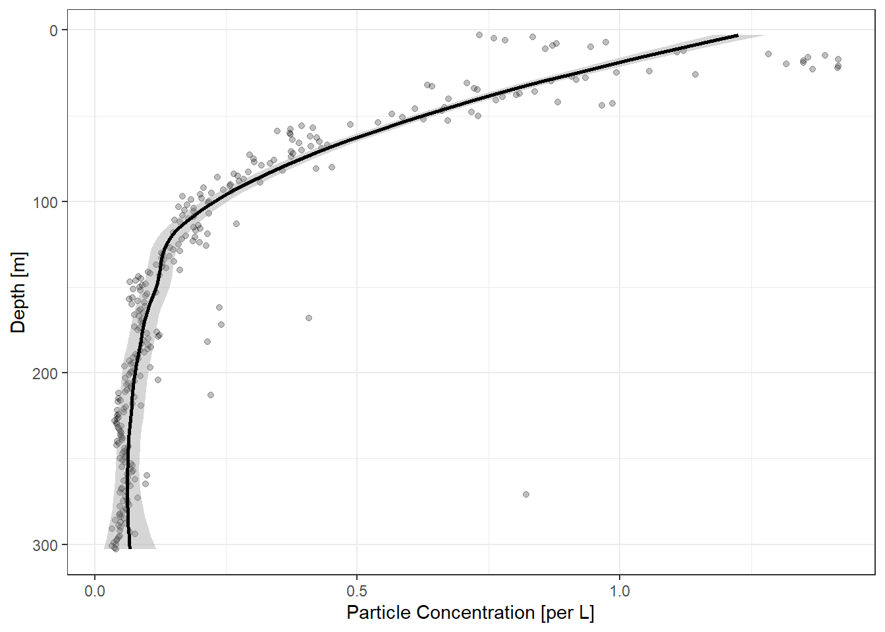
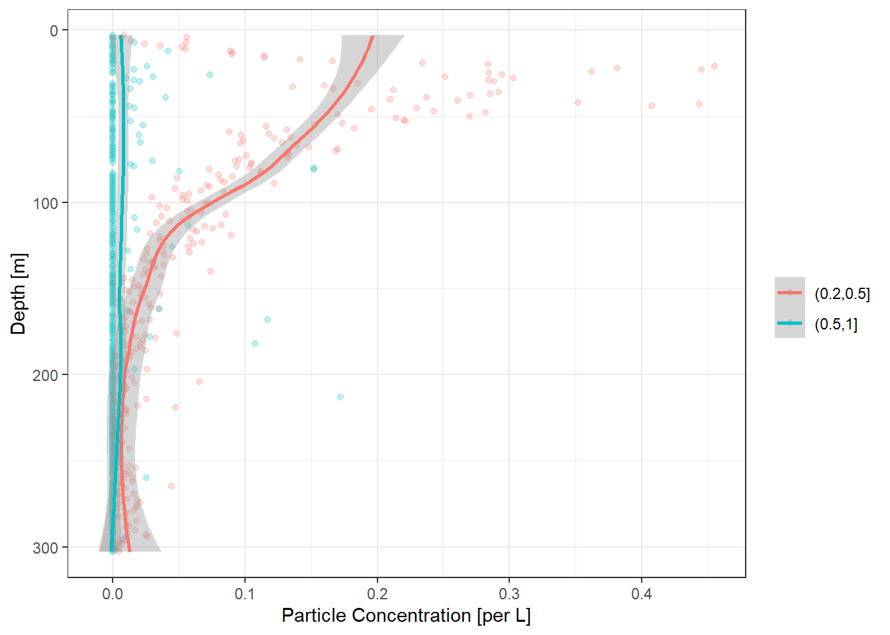

library(EcotaxaTools)
# in this list, there is a faulty cast at index 16
ecopart_example$par_files <- ecopart_example$par_files[-16]
par_conc <- ecopart_example |> uvp_par_conc(bin_limits = c(.1,.25,1,2)) # for three size classesParticle Concentration
Warning
As of ver1.2.0.9000, the bulk of the EcotaxaTools functionality are primarily built toward zooplankton data. Particle functionality are limited but will improve with new updates. If you’d like to collaborate on this package, contact Alex Barth.
Calculate the particle concentration in 1-m depth bins
uvp_par_conc() can be used to quickly calculate the particle concentration in 1-m depth bins. The user must specify what sizes (by ESD) particles should be grouped. If left unspecified, the total particle concentration (regardless of size) will be returned.
To specify particle size classes use bin_limits. min_esd and max_esd can both be used to specify sizes.
This now creates a list with particle concentrations for each cast. This data can all be combined with list_to_tib()
par_conc |> list_to_tib('cast')# A tibble: 80,307 × 4
depth par_conc esd_bin cast
<dbl> <dbl> <chr> <chr>
1 3 0.169 (0.1,0.25] bats361_ctd1
2 4 0.199 (0.1,0.25] bats361_ctd1
3 5 0.170 (0.1,0.25] bats361_ctd1
4 6 0.178 (0.1,0.25] bats361_ctd1
5 7 0.252 (0.1,0.25] bats361_ctd1
6 8 0.231 (0.1,0.25] bats361_ctd1
7 9 0.240 (0.1,0.25] bats361_ctd1
8 10 0.281 (0.1,0.25] bats361_ctd1
9 11 0.237 (0.1,0.25] bats361_ctd1
10 12 0.332 (0.1,0.25] bats361_ctd1
# … with 80,297 more rowsPlotting Particle concentraitons
There is also a default plotting method for particle data. If you provide a par_list, ecopart_obj, or par_conc_list (from uvp_par_conc()), then the plots will open a new window for each. Providing a single dataframe (par_df) will produce single plots. Two plots can be made:
Note
In the below examples, I feed the original par_df to the particle_plot() function. This will pass the data through uvp_par_conc(). However, you can also pass the output of uvp_par_conc() to particle_plot() if you wish to have that data separately available. For example: ex1 <- uvp_par_conc(); particle_plot(ex1$cast1).
Total particle concentration:
If there are no particle size bins, total particle concentration will be returned
plot1 <- ecopart_example$par_files$bats361_ctd1 |>
particle_plot(img_vol = 1.1, pixel_mm = 0.092)`geom_smooth()` using method = 'loess' and formula 'y ~ x'
print(plot1)[1] "Enjoy the plots!"Binned particle concentration:
plot2 <- ecopart_example$par_files$bats361_ctd1 |>
particle_plot(img_vol = 1.1, pixel_mm = 0.092,
bin_limits = c(0.2,0.5,1))`geom_smooth()` using method = 'loess' and formula 'y ~ x'
print(plot2)[1] "Enjoy the plots!"